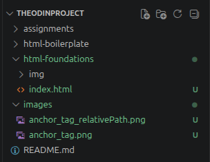

To create links to other websites or pages within the same site, the anchor tag is useful for this. The anchor tag looks something like this:
Below is a breakdown of that the anchor tag contains:
Links to pages on other websites are called 'absolute' links. A typical absolute link will be made up of the following: `scheme://domain/path`. More information can be found here.
Relative links link to other pages within a websites own domain. Relative links do not include the domain name, since it's another page on the same site. Relative links can only include the file path to the other page, relative to the page you are creating the link on.
If the page is located in the same directory, the anchor tag will most likely look something like this:
The image shown below is in a folder, but is in the same directory as this .html file.

However, if the image is located in a different directory altogether, the anchor tag might look something like:
In short, the src in the above image breaks down to this:
The anchor tag also has a 'alt' attribute too. This attribute, when used, is a short piece of text describing the image. This is useful for accessibility tools, such as screenreaders. In the instance where the image cannot be loaded, the text is displayed instead.
Below shows an example of this in action. The file name has been purposely spelt incorrectly to show the alt text instead of the image.

Whilst this isn't required, specifying a width and height of the image helps the browser layout the page without causing images to flash and jump about.
It is a good habit to always specify these attributes on every image, even when the image is correct size or you are using CSS to modify it. This can be done by using the `width` and `height` attributes as shown in the example below:
It's important to get the image size correct. If the wrong width or height is provided, the image will appear incorrectly. Either looking to stretched or to small.